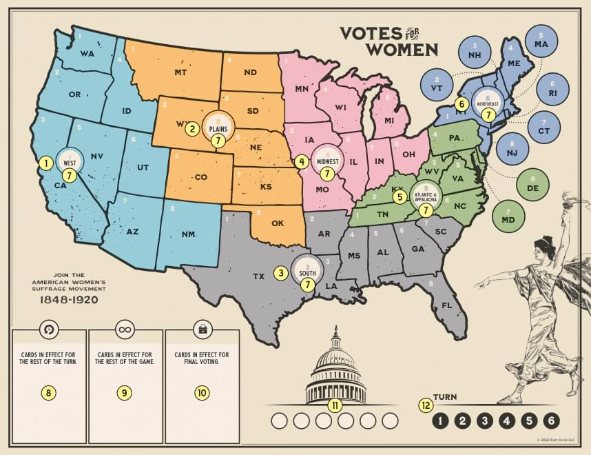
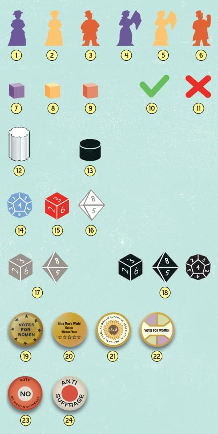
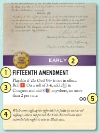
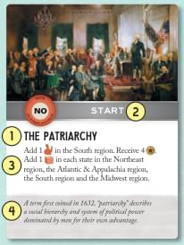
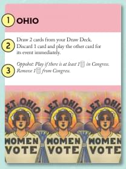
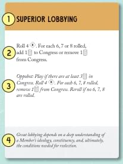
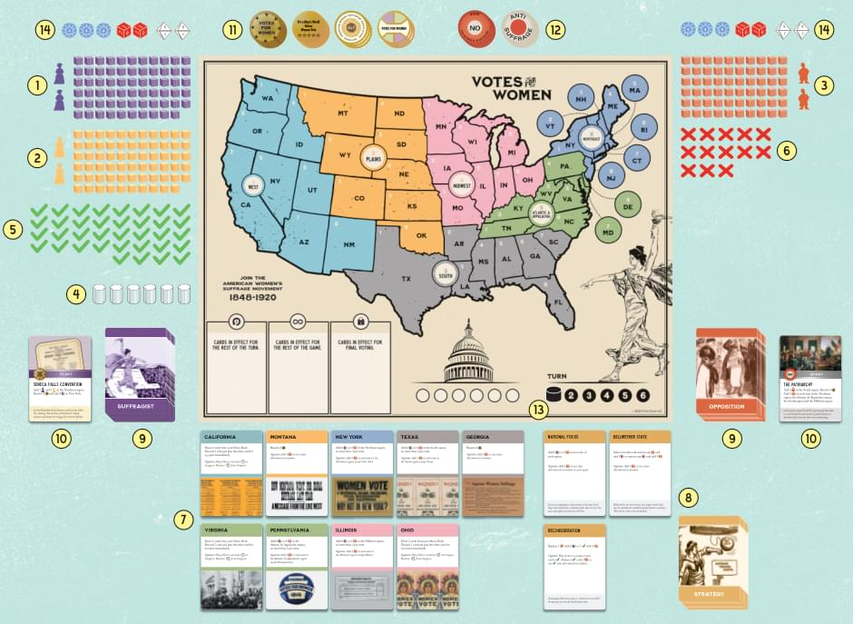

"The right of citizens of the United States to vote shall not be denied or abridged by the United States or by any State on account of sex. Congress shall have power to enforce this article by appropriate legislation."
– Nineteenth Amendment to the US Constitution
Votes for Women is an asymmetrical, two-sided game that revolves around the battle to ratify or reject the Nineteenth Amendment to the US Constitution. The Suffragist side will push Congress to propose the Nineteenth Amendment, and campaign to have 36 states ratify the Amendment. The Opposition side will try to prevent Congress from proposing the amendment or, failing that, to have 13 states reject the amendment.
Players will add or remove Congressional markers as support for the amendment waxes and wanes in Congress, while also placing Purple /Yellow cubes (Suffragist side) or Red cubes (Opposition side) to reflect their political power in individual states. When a player gains support in a state, they first reduce or eliminate their opponent's cubes, as needed, before adding their own cubes so that a state will only ever have Purple /Yellow or Red .
Once the Nineteenth Amendment has been sent to the states for ratification (or rejection), the Suffragist
side will place a Green check
in each state that ratifies the amendment and the Opposition side will place
a Red X  in each state that rejects the amendment.
in each state that rejects the amendment.
If the Nineteenth Amendment has not been sent to the states for ratification by the end of Turn 6, the Opposition side immediately wins the game.
If the Nineteenth Amendment has been sent to the states:
HISTORICAL DOCUMENTS
Because of the importance of the history of the campaign to pass the Nineteenth Amendment, we have included a Historical Supplement & Designer's Notes booklet; a composite of all of the suffrage-related stories from the August 19, 1920 issue of The New York Times; and several historical documents that are described in the supplement.
The map of the United States is divided into six regions of eight states each:
West (1); Plains (2); South (3); Midwest (4); Atlantic & Appalachia (5); Northeast (6). Each region has a Region Bubble (7) where Campaigners are placed when in the region.
Players will place a Purple cube , Yellow cube
or Red cube
in a state to show their political power
– and later, place a Green check
or Red X  in a state to show whether or not a state has ratified or
rejected the Nineteenth Amendment.
in a state to show whether or not a state has ratified or
rejected the Nineteenth Amendment.
Certain card events are Persistent Events. Cards with a rest of turn icon are placed in the "Cards in Effect for the Rest of the Turn" box. Cards with a rest of game icon are placed in the "Cards in Effect for the Rest of the Game" box. Cards with a ballot box icon are placed in the "Cards in Effect for Final Voting" box (8) (9) (10).
The Congressional Track (11) shows the level of support in Congress for women's suffrage. Players will add or remove Congressional markers to show the ebb and flow of support for the Nineteenth Amendment. The Turn Track (12) uses the Turn marker to indicate what turn it is. 
There are:
The game comes with extra pieces in case any are lost or damaged. We recommend that you set them to the side. 
CARD & TEXT SYMBOL KEY
Suffragist Campaigner
Suffragist cube
Purple or Yellow cube
Green check
Congressional marker
Opposition Campaigner
Opposition cube
Red X
Die (d4, d6, d8)
Button
There are five decks of cards:

Suffragist card

Opposition card
Each Event card includes Card Title (1), Card Era (2), Event text (3), Historical text (4), Persistent Event icon (5).
Each card has a Card Era that is used to create each players' Draw Deck. Late cards will be on the bottom of the deck, Middle cards will be in the middle of the deck and Early cards will be on the top of the deck. The Suffragist and Opposition decks each have one Start card – this card will be in the player's hand at the start of the game.
Some Event cards have a prerequisite – for example, Fifteenth Amendment can only be played if The Civil War is not in effect. A card is in effect if it is in the appropriate Persistent Event box.
Some Event cards require a player to roll a and only take the action on a roll of 3-6. Otherwise, the Event card is discarded with no effect – even if it has a Persistent Event icon on it. A player may spend a to re-roll a and may continue to re-roll as long as they have a to spend.
Some Event cards are Persistent Events and are marked with special icons If played as an Event, these cards are placed on the board in the appropriate Persistent Event space.
Each space indicates the Persistent Event's effect.
There are two Event card icons that require specific explanation:

State card

Strategy card
On each State and Strategy card is Card Title (1), Event text (2), Oppobot alternate text (3). Strategy cards also include Historical text (4). The State cards are color-coded to the region that they are located.
State cards can be claimed when a side has four cubes in that state, while Strategy cards are claimed either during the Strategy Phase or via Event card play.
This is the setup for the two-player Competitive game.

The game consists of six turns. If neither player has won after six turns, the game goes into Final Voting. Each turn shares the following sequence of play:
1. Planning Phase
2. Strategy Phase
3. Operations Phase
4. Cleanup Phase
Each player draws six cards from their Draw deck. When added to either their Start card (on Turn 1) or their card held from the previous turn (on Turns 2-6), their hand should begin with seven cards.
Please note that the Strategy Phase is skipped on Turn 1.
There are six rounds in the Operations Phase. In each round, first the Suffragist player and then the Opposition player must play one card from their hand and may play one claimed Strategy or State card from in front of them.
When playing a card from their hand, a player has four options:
When a card is played as an Event, its event text is read and resolved. Some Event cards have a prerequisite for being played as an Event. If that prerequisite is not met, then the card may not be played as an Event. Some Event cards require a player to spend to play the Event – if the player does not have enough to spend, the card may not be played as an Event. Some Event cards require a successful die roll – if the die roll is a failure then the Event card is discarded without following the rest of the Event text. However, a player may spend a to re-roll a failed die roll.
After resolving the Event, the card is placed in the discard pile – unless the Event is a Persistent Event. Persistent Events should be placed in the appropriate box on the game board.
When a card is played for a Campaigning action, the player rolls a for each Campaigner they have in play (on the board). If the player is unsatisfied with the roll, they may spend a to re-roll all of the dice rolled.
Once satisfied with their roll, the player assigns a die to each of their Campaigners. Each Campaigner may then place the corresponding number of cubes, matching the Campaigner's color, in the states within the region that the Campaigner is in. The player may spend a to move the Campaigner to a different region, but all of the corresponding cubes must be put in the same region. Then the card is placed in the discard pile.
EXAMPLE: The Suffragist player has a and a in the Northeast. The Suffragist player rolls two and rolls 1 and 1. The Suffragist player decides to spend a and re-rolls 3 and 4. The Suffragist player assigns the 3 to the and assigns the 4 to the . The Suffragist player decides to place two in Vermont and one in Connecticut with the . The Suffragist player also decides to spend one to move the to the West region, and places four in California.
When a card is played for an Organizing action, the player takes as many as they have Campaigners in play. Then the card is placed in the discard pile.
When a card is played for a Lobbying action, the player rolls as many as they have Campaigners in play. For each 6 rolled, the player may add one to Congress or remove one from Congress. Then the card is placed in the discard pile.
When playing a claimed State or Strategy card, the player may play the claimed card before or after playing a card from their hand. The text on the card is read and resolved, similar to a card played as an Event. After play, the card is removed from the game. A player may only play one State or one Strategy card per round.
After the six rounds of the Operations Phase is the Cleanup Phase.
At the end of Turns 1-5, any cards in the "Cards in Effect for the Rest of the Turn box" are placed in the appropriate discard pile. Each player should have one card in their hand to carry over to the next Turn. The Turn marker is advanced and the next Turn begins.
At the end of Turn 6, if the Nineteenth Amendment has not been sent to the states for ratification, the game ends in an Opposition victory. If the Nineteenth Amendment has been sent to the states for ratification but neither player has won the necessary number of states for victory, the game advances to Final Voting. Any cards in the "Cards in Effect for the Rest of the Turn box" and "Cards in Effect for the Rest of the Game box" are placed in the appropriate discard pile.
ORGANIZATIONAL BUTTONS
are a sort of currency in the game that represent organizational strength. may be spent in the following ways:
- A may be spent to re-roll a die roll. If multiple dice were rolled, all of the dice must be re-rolled. A player may continue to spend to re-roll the same roll until their supply of is exhausted. A player may only spend a to re-roll their roll, never their opponent's roll.
- A may be spent to move a Campaigner from one region to another region while a player is taking a Campaigning action. A separate must be spent for each Campaigner moved.
- are committed during the Strategy Phase and spent as directed by the outcome of that Phase.
- may be spent as directed by Event card text.
SENDING THE NINETEENTH AMENDMENT TO THE STATES
When the sixth is placed in Congress, Congress has passed the Nineteenth Amendment and sends it to the states to be ratified or rejected. Remove all of the from Congress – the Congressional portion of the game is complete.
For each state that has at least four , remove the cubes and replace them with a . These states have ratified the Nineteenth Amendment. For each state that has at least four , remove the cubes and replace them with a
As play continues, each time a state has four , the cubes are immediately removed and replaced with a and each time a state has four the cubes are immediately removed and replaced with a
The moment that the 36th is placed, the Nineteenth Amendment is ratified by the states and the game ends in a Suffragist victory. Alternatively, the moment that the 13th
ADDING OR REMOVING CUBES IN A STATE
Only one side may have cubes in the same state at the same time. If a player is directed to add cubes in a state that contains opposing cubes, each cube that is to be added removes an opposing cube. Once a state is empty of cubes, then cubes of their color may be added.
EXAMPLE: There is one in California and the Suffragist player is adding two to California. The Suffragist player first removes the and then adds either a or a .
Whenever an Event directs a player to remove cubes of a particular color, this effect is limited to that particular color and only to what the opposing player has on the board. A player will never add their own cubes when directed to remove their opponent's cubes.
If a state has already ratified or rejected the Nineteenth Amendment – and therefore has a or
CLAIMING STATE AND STRATEGY CARDS
The game begins with nine State cards available. When a player places their fourth cube in a state with a card, the player claims that State card and places it face up in front of them. The player does not lose the card if a subsequent play causes them to drop below four cubes in the state. New State cards are never put out – there are only nine State cards available per game.
The game also begins with three Strategy cards available. Strategy cards may be claimed either during the Strategy Phase or by play of certain Event cards. Any time a Strategy card is claimed, a new one is drawn for the Strategy deck so that there are always three Strategy cards available.
Claimed cards are always placed face up in front of the player. A player may play one claimed card – State or Strategy – in addition to the Event card that they must play from their hand during a round of the Operations Phase. After a claimed card is played, it is removed from the game.
When the Oppobot claims a State or Strategy card, the Oppobot immediately plays that card for the Oppobot effect listed on the card.
If after six Turns, the Nineteenth Amendment has been sent to the states but neither player has won the necessary number of states to win the game – 36 states for the Suffragist player or 13 states for the Opposition player – then the game enters Final Voting.
In Final Voting, the players take turns, starting with the Suffragist player, selecting a state to vote on the Nineteenth Amendment. Each player rolls a . Either player may spend a to re-roll their die. If a player has cubes in the state, then the player adds that number of cubes to their total roll.
Whoever has the higher total wins the state and
places either a
or  in the state. The default is
that the Opposition player wins all ties. However, if
the Suffragist player had previously played Miss Febb
Wins the Last Vote, then the Suffragist player wins
all ties.
in the state. The default is
that the Opposition player wins all ties. However, if
the Suffragist player had previously played Miss Febb
Wins the Last Vote, then the Suffragist player wins
all ties.
EXAMPLE: The Suffragist player has won 35 states and the Opposition player has won 12 states. Tennessee is the last state to vote and has two .
Both Voter Registration and Miss Febb Wins the Last Vote are in the "Cards in Effect for Final Voting" so the Suffragist player rolls a and wins all ties. Because Voter Suppression was not played, the Opposition player rolls a . The Suffragist player has one remaining and the Opposition player has no remaining.
The Suffragist player rolls a 5 and the Opposition player rolls a 4. The Opposition player adds 2 to their roll for the two in Tennessee, so the Opposition player has a total of 6 and wins the state. But not so fast – the Suffragist player spends their last and re-rolls a 6! Now both players have a total of 6 and the Suffragist player wins the state because Miss Febb Wins the Last Vote allows the Suffragist player to win ties. The Suffragist player places their final – the states have ratified the Nineteenth Amendment and the Suffragist player has won the game!
... elided ...
... elided ...
... elided ...
Please visit www.votesforwomengame.com to see instructional videos on how‑to‑play, managing the Oppobot, and basic strategies. If you have any rules questions, do not hesitate to email rules@fortcircle.com .